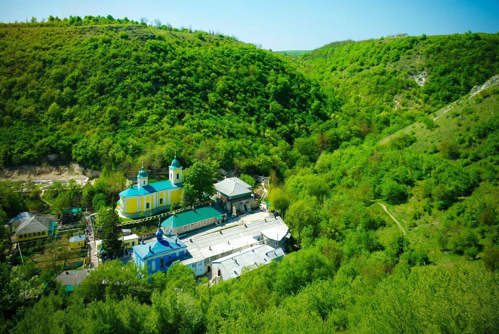

{kind=link}
{kind=link}
{kind=link}
{kind=link}
09:00
01
Встреча и выезд из Кишинёва
Забираем гостей из отеля или согласованной точки в центре. Дорога до заповедника занимает примерно один час.
≈ 55 км · трансфер включён
Скальный монастырь, лесные тропы, ущелье и водопады — спокойный однодневный маршрут из Кишинёва.
Оставить заявкуБез общих слов — показываем маршрут заранее
Пройдём по ущелью, увидим скальный монастырь и остановимся у природных источников и водопадов Сахарны.
Фотографии предоставлены для страницы маршрута.
Запланировать путешествие
Укажите дату и количество гостей. Свяжемся удобным для вас способом и отправим точную программу и стоимость.
Один день — несколько эпох
Забираем гостей из отеля или согласованной точки в центре. Дорога до заповедника занимает примерно один час.
≈ 55 км · трансфер включёнПервая остановка — обзорная площадка. Гид покажет излучину реки, скальные мысы и объяснит план всей пешей части.
≈ 30 минут · время для фотографийИдём по мысу Бутучены к колокольне и каменному кресту. По пути говорим о древних поселениях и средневековом городе.
≈ 1 км пешком · лёгкий подъёмЗаходим в действующий монастырь внутри скалы и выходим на небольшую площадку над долиной. Посещение зависит от режима работы и богослужений.
≈ 45 минут · нужна уместная одеждаСмотрим традиционные дома, сельские дворы и спокойную жизнь одного из самых известных туристических сёл Молдовы.
≈ 45 минут · ровный участокПо предварительному заказу организуем обед с местными блюдами в гостевом доме. Без обеда оставляем время на самостоятельную прогулку и отдых.
≈ 60 минут · оплачивается отдельноВыезжаем после прогулки или обеда. Ориентировочное прибытие в город — между 15:30 и 16:30.
Высадка в центре или у отеляПрограмма предварительная: последовательность и продолжительность остановок могут меняться из-за погоды, режима работы монастыря и темпа группы.
Что останется в памяти
Четыре точки
Прозрачно и без скрытых обещаний
за человека
Предварительная стоимость. Финальная цена зависит от размера группы и дополнительных услуг. Запросить расчётОкончательный состав услуг будет зафиксирован до подтверждения бронирования.
Перед поездкой
Нет. Маршрут рассчитан на обычную прогулочную нагрузку, но часть пути проходит по неровной каменистой тропе.
Удобную обувь, головной убор, защиту от солнца и одежду по погоде. Для посещения действующего монастыря нужна уместная одежда.
Да, если ребёнку комфортны прогулки по неровной местности. Продолжительность маршрута можно адаптировать под семью.
Планируем проводить тур на русском, румынском и английском. Нужный язык указывается при заявке.
Мы скорректируем пешую часть, время остановок или предложим перенос, если условия не позволяют безопасно пройти маршрут.